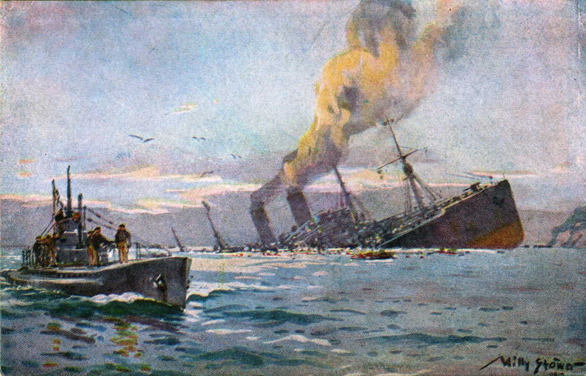
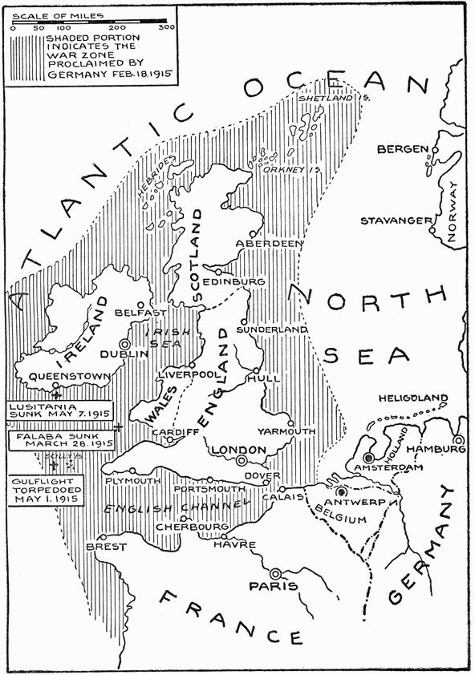
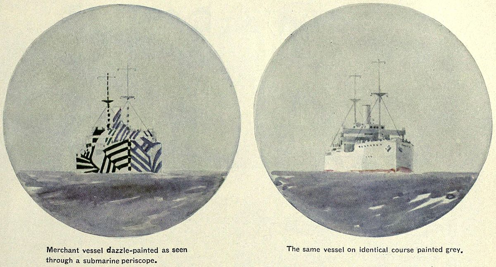

|
|
 |
|

Map shows War Zone declared by Germany in February, 1915 |
The poster portrays overseas travel as a trivial endeavor. It’s just a little jump across the channel. However the reality is much different. Despite the relative incapacitation of the German High Seas Fleet by the British Royal Navy at the beginning of WWI, the development of a new technology by the German Navy, the U-Boat , proved to be a new danger on the seas. Able to operate for weeks without docking, and slip unnoticed under the water, it allowed submarines to operate effectively without Naval supremacy. In 1915 the German Army declared Unrestricted Submarine Warfare, however, after proving to be ineffective and diplomatically costly, they shut the system down until 1917 when the war was getting desperate. With a renewed submarine fleet, the probability of surviving a roundtrip trip from Britain to an area beyond Gibraltar was an estimated 3 in 4 chance. Though the main threat of U-Boats was in the Atlantic, there were instances where German U-Boats slipped across enemy minefields and attacked ships in the English Channel. |

The threat of u-boats was so prevalent that many ships employed “dazzle camouflage.” The intention of the camouflage was to make it difficult to estimate a ship's location, orientation, and trajectory. |
Public domain historical footage of U-Boats sinking ships. |